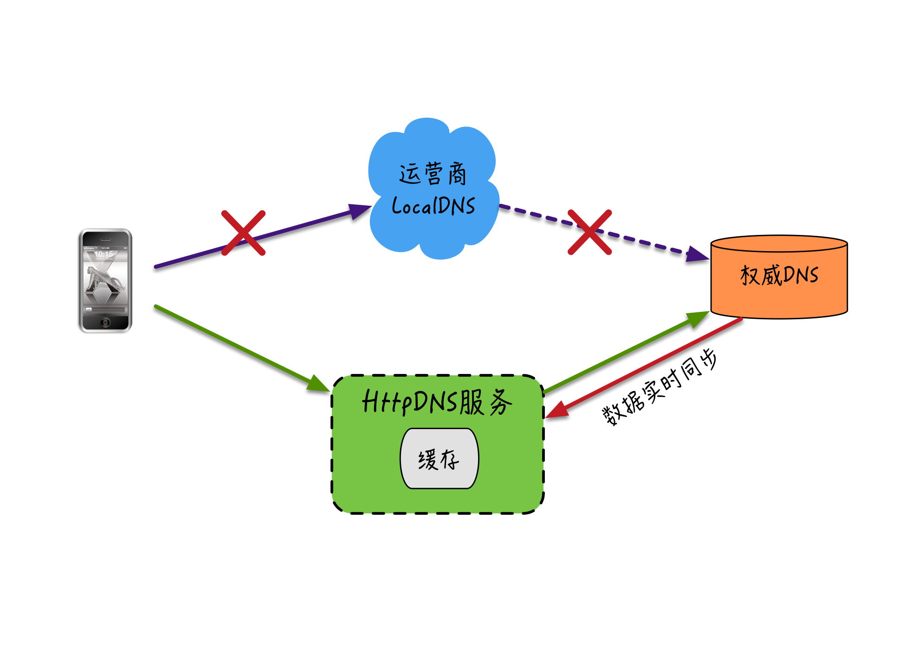

- 00 开篇词 搞懂“实时交互”的IM技术，将会有什么新机遇？.md.html
- 01 架构与特性：一个完整的IM系统是怎样的？.md.html
- 02 消息收发架构：为你的App，加上实时通信功能.md.html
- 03 轮询与长连接：如何解决消息的实时到达问题？.md.html
- 04 ACK机制：如何保证消息的可靠投递？.md.html
- 05 消息序号生成器：如何保证你的消息不会乱序？.md.html
- 06 HttpDNS和TLS：你的消息聊天真的安全吗？.md.html
- 07 分布式锁和原子性：你看到的未读消息提醒是真的吗？.md.html
- 08 智能心跳机制：解决网络的不确定性.md.html
- 09 分布式一致性：让你的消息支持多终端漫游.md.html
- 10 自动智能扩缩容：直播互动场景中峰值流量的应对.md.html
- 11 期中实战：动手写一个简易版的IM系统.md.html
- 12 服务高可用：保证核心链路稳定性的流控和熔断机制.md.html
- 13 HTTP Tunnel：复杂网络下消息通道高可用设计的思考.md.html
- 14 分片上传：如何让你的图片、音视频消息发送得更快？.md.html
- 15 CDN加速：如何让你的图片、视频、语音消息浏览播放不卡？.md.html
- 16 APNs：聊一聊第三方系统级消息通道的事.md.html
- 17 Cache：多级缓存架构在消息系统中的应用.md.html
- 18 Docker容器化：说一说IM系统中模块水平扩展的实现.md.html
- 19 端到端Trace：消息收发链路的监控体系搭建.md.html
- 20 存储和并发：万人群聊系统设计中的几个难点.md.html
- 21 期末实战：为你的简约版IM系统，加上功能.md.html
- 22 答疑解惑：不同即时消息场景下架构实现上的异同.md.html
- 结束语 真正的高贵，不是优于别人，而是优于过去的自己.md.html
- 捐赠
06 HttpDNS和TLS：你的消息聊天真的安全吗？
你好，我是袁武林。
在开始之前，我们先回顾一下前面几篇的内容。我们陆续讲到了消息实时性、消息投递的可靠性、消息时序一致性在即时系统业务场景中的重要性和难点，以及相应的实现方案。
如果说消息的“实时性”“投递可靠性”“时序一致性”是评价一个即时消息服务可用性和先进性的重要指标；那么另一个重要的特性：安全性，就是一个IM服务能否存在的底线和立命之本。
对于依托即时消息技术之上的各种私密聊天App、轨迹位置服务、远程工控系统等业务，对于安全性的需要远高于一般业务。
毕竟，没有人能接受私密的聊天内容被第三方窥探，实时位置的暴露甚至可能带来人身方面的安全风险，而涉及了重要的远程工控操作，如果操作被截获或者篡改，可能会导致严重的工程事故。
那么今天，我们就来聊一聊IM系统中会有哪些常见的安全问题，针对这些不同安全问题，我们分别采用了哪些技术方案来进行应对。限于篇幅，对于每个技术点的具体实现过程，我们不做深入讨论，你只需要了解到具体方案的适用场景就可以了。
消息安全性的三个维度
既然对于即时消息服务来说，安全性是如此的重要和不可妥协，那么到底都有哪些环节可能导致消息安全方面的问题呢？
一般来说，从消息的产生和流转的细分上，我们大概从三个维度来描述消息的安全性：消息传输安全性、消息存储安全性、消息内容安全性。
如何保证消息传输安全性
我们先来关注一下消息在传输过程中的安全性。
传输安全性这个比较好理解，存在网络交互的即时消息服务，大多需要通过开放网络来进行消息和信令的传输。
可能导致出现安全风险的地方相对也比较多，比如，DNS劫持会导致发往IM服务的请求被拦截发到其他服务器，导致内容泄露或失效；或者明文传输的消息内容被中间设备劫取后篡改内容，再发往IM服务器引起业务错误等问题。
在消息传输过程中，我们主要关注两个问题：“访问入口安全”和“传输链路安全”，这也是两个基于互联网的即时消息场景下的重要防范点。
保证访问入口安全：HttpDNS
对于即时消息服务，一般都会提供一个公网的“接入服务”，作为用户消息收发的出入口，并通过域名的方式提供给客户端。对于这个出入口的访问，经常也会由于各种原因导致“访问不了”“地址错误”的问题。
关于访问入口，我们比较常见的问题就是DNS劫持。针对接入域名的DNS劫持问题的常见原因有下面两类。
第一类是路由器的DNS设置被非法侵入篡改了。这种问题常见于一些家用宽带路由器，由于安全性设置不够（比如使用默认密码），导致路由器被黑客或者木马修改了，DNS设置为恶意的DNS地址，这些有问题的DNS服务器会在你访问某些网站时返回仿冒内容，或者植入弹窗广告等。
第二类是运营商LocalDNS可能会导致接入域名的解析被劫持。
比如下面三种比较典型的情况。
- LocalDNS是部分运营商为了降低跨网流量，缓存部分域名的指向内容，把域名强行指向自己的内容缓存服务器的IP地址。
- 运营商可能会修改DNS的TTL(Time-To-Live，DNS缓存时间)，导致DNS的变更生效延迟，影响服务可用性。我们之前一个线上业务域名的TTL在某些省市能达到24小时。
- 一些小运营商为了减轻自身的资源压力，把DNS请求转发给其他运营商去解析，这样分配的IP地址可能存在跨运营商访问的问题，导致请求变慢甚至不可用。
那么，如何防止DNS劫持呢，我们一起来看看。
对于宽带路由器的DNS设置被篡改的问题，一般，我们会重置一下路由器的配置，然后修改默认的路由管理登录密码，基本上都能解决，这里不做细述。
解决运营商LocalDNS的域名劫持和调度错误，业界比较常用的方案有HttpDNS。HttpDNS绕开了运营商的LocalDNS，通过HTTP协议（而不是基于UDP的DNS标准协议）来直接和DNS服务器交互，能有效防止域名被运营商劫持的问题。
而且由于HttpDNS服务器能获取到真实的用户出口IP，所以能选择离用户更近的节点进行接入，或者一次返回多个接入IP，让客户端通过测速等方式选择速度更快的接入IP，因此整体上接入调度也更精准。
当然，调度精准的另一个前提是HttpDNS服务自身需要有比较全的IP库来支持。目前很多大厂也基本都支持HttpDNS为主，运营商LocalDNS为辅的模式了，像很多第三方云厂商也提供对外的HttpDNS解析服务。HttpDNS的实现架构如下图：

这里介绍一下这张图。用户的请求不再通过运营商来查询域名的解析，而是通过HTTP独立提供的一个方法来进行查询，这个HTTP接口后端再去向权威DNS请求，以及去做一个数据的同步。
保证传输链路安全：TLS传输层加密协议
接下来，我们来看看第二种情况，消息传输链路。对于消息在传输链路中的安全隐患，基本可以总结为以下几种。
- 中断，攻击者破坏或者切断网络，破坏服务可用性。
- 截获，攻击者非法窃取传输的消息内容，属于被动攻击。
- 篡改，攻击者非法篡改传输的消息内容，破坏消息完整性和真实语义。
- 伪造，攻击者伪造正常的通讯消息来模拟正常用户或者模拟IM服务端。
接下来，我们一起来逐一解决这几种隐患。
关于消息链路中断，我们采取多通道方式进行解决。
在即时消息系统中，对于“中断传输”这种主动攻击，破坏服务可用性的行为，一般可以采取多通道方式来提升链路可用性，比如很多IM系统的实现中，如果主链路连接不通或者连接不稳定，就会尝试自动切换到failover通道，这个failover通道可以是：
从HttpDNS服务返回的多个“接入IP”中选择性进行切换，防止某一个“接入IP”的中间链路被破坏。
从当前数据传输协议切换到其他传输协议，比如从基于UDP协议的QUIC协议切换到基于TCP协议的私有协议；或者针对TCP的私有协议提供HTTP Tunnel来对数据进行二次封装（微博目前支持这种方式），防止某些针对特定协议的中断攻击。
关于消息传输过程被截获、篡改、伪造，我们则利用私有协议和TLS的技术，来进行防控。
对于消息传输过程中被第三方截获消息内容、消息内容被恶意篡改，以及第三方伪造IM服务端或者伪造客户端来获取消息或者执行恶意操作的情况，业界也有很多应对策略来进行防护。
- 私有协议
对于采用二进制私有协议的即时消息系统本身由于编码问题天然具备一定的防窃取和防篡改的能力，相对于使用JSON、XML、HTML等明文传输系统，被第三方截获后在内容破解上相对成本更高，因此安全性上会更好一些。
- TLS
消息内容加密传输也能保证被截获后无法获取到消息明文，同样也不能对加密的内容进行篡改，但问题的关键是加密秘钥的协商本身需要较高的安全性保障。
比如双方约定好一个固定秘钥来进行加密，但由于客户端代码被反编译等原因，可能导致秘钥泄露；或者双方在连接建立时再协商好一个临时秘钥，但这个临时秘钥在传输上本身就可能被截获，从而导致后续的密文都能被破解。
另外的问题是，如果有第三方伪装成服务端来和客户端交换秘钥，这样即使后续的传输内容都是加密的也没有办法防止消息的泄露问题。
因此，为了解决上面一系列的安全问题，业界一般采用TLS协议来对业务数据进行保护，TLS巧妙地把“对称加密算法”“非对称加密算法”“秘钥交换算法”“消息认证码算法”“数字签名证书”“CA认证”进行结合，有效地解决了消息传输过程中的截获、篡改、伪造问题。
这里我解释一下具体的过程。
- 非对称加密算法和秘钥交换算法用于保证消息加密的密钥不被破解和泄露。
- 对称加密算法对消息进行加密，保证业务数据传输过程被截获后无法破解，也无法篡改消息。
- 数字签名和CA认证能验证证书持有者的公钥有效性，防止服务端身份的伪造。
TLS本身相对于原本的TCP三次握手，需要更多算法确认、秘钥协商交换、证书验证等环节，因此在握手环节会多出1-2个RTT(Round-Trip Time往返时延)，所以TLS在连接效率和传输性能上有一定的额外开销。
针对这个问题，最新的TLS 1.3版本进行了优化，可以支持1-RTT甚至0-RTT的握手环节，能较大幅度降低TLS的额外消耗，TLS 1.3在2018年8月才定稿最终版本（RFC 8446），大规模铺开使用还需一定时间，像微信早在几年前TLS 1.3的草案阶段，就自行实现了“基于TLS1.3的MMTLS协议”来保护消息传输中的安全。关于TLS的细节我就不在这篇中展开了，有兴趣的同学可以自行再找资料研究。
如何保证消息存储安全性
由于消息漫游和离线消息等业务需要，大部分即时消息服务会将消息暂存在IM服务器端的数据库，并保留一定的时间，对于一些私密的消息内容和用户隐私数据，如果出现内部人员非法查询或者数据库被“拖库”，可能会导致隐私信息的泄露。
账号密码存储安全：“单向散列”算法
针对账号密码的存储安全一般比较多地采用“高强度单向散列算法”（比如：SHA、MD5算法）和每个账号独享的“盐”（这里的“盐”是一个很长的随机字符串）结合来对密码原文进行加密存储。
“单向散列”算法在非暴力破解下，很难从密文反推出密码明文，通过“加盐”进一步增加逆向破解的难度。当然，如果“密文”和“盐”都被黑客获取到，这些方式也只是提升破解成本，并不能完全保证密码的安全性。因此还需要综合从网络隔离、DB访问权限、存储分离等多方位综合防治。
消息内容存储安全：端到端加密
针对消息内容的存储安全，如果存储在服务端，不管消息内容的明文或者密文都存在泄漏的风险。因此保证消息内容存储安全的最好方式是：
- 消息内容采用“端到端加密”（E2EE），中间任何链路环节都不对消息进行解密。
- 消息内容不在服务端存储。
采用“端到端加密”方式进行通信，除了收发双方外，其他任何中间环节都无法获取消息原文内容，即使是研发者也做不到“破解”并且获取数据，顶多停止这种加密方式。
业界很多聊天软件如WhatsApp、Telegram就采用了“端到端加密”方式来保证消息内容的安全。但国内的大部分即时消息软件如QQ、微信等由于网络安全要求，目前暂时还没有采用“端到端加密”。
“端到端加密”之所以更加安全是因为：是由于和服务端TLS加密不一样，“端到端加密”的通信双方各自生成秘钥对并进行公钥的交换，私钥各自保存在本地不给到IM服务端。发送方的消息使用接收方的公钥来进行加密，因此即使是IM服务端拿到了加密信息，由于没有接收方的私钥，也无法解密消息。
消息内容安全性
内容安全性主要是指针对消息内容的识别和传播的控制，比如一些恶意的链接通过即时消息下发到直播间或者群，可能会导致点击的用户被引诱到一些钓鱼网站；另外一些反政、淫秽的图片、视频等消息的传播会引起不良的负面影响，需要进行识别处置并避免二次传播。
针对消息内容的安全性一般都依托于第三方的内容识别服务来进行“风险内容”的防范。
比如下面的几种方案：
建立敏感词库，针对文字内容进行安全识别。
依托图片识别技术来对色情图片和视频、广告图片、涉政图片等进行识别处置。
使用“语音转文字”和OCR（图片文本识别）来辅助对图片和语音的进一步挖掘识别。
通过爬虫技术来对链接内容进行进一步分析，识别“风险外链”。
一般来说，针对内容安全的识别的方式和途径很多，也有很多成熟的第三方SaaS服务可以接入使用。
对于IM服务端来说，更多要做的是要建立和“识别”配套的各种惩罚处置机制，比如：识别到群里有个别人发色情视频或者图片，可以联动针对该用户进行“禁言处理”，如果一个群里出现多人发违规视频，可以针对该群“禁止发多媒体消息”或者进行“解散群”等操作。具体处置可以根据业务需要灵活处理。
小结
即时消息中，消息安全性是各种私密社交场景的核心需求，一般可以从三个维度来对安全性进行评价。
消息传输安全性。“访问入口安全”和“传输链路安全”是基于互联网的即时消息场景下的重要防范点。针对“访问入口安全”可以通过HttpDNS来解决路由器被恶意篡改和运营商的LocalDNS问题；而TLS传输层加密协议是保证消息传输过程中不被截获、篡改、伪造的常用手段。
消息存储安全性。针对账号密码的存储安全可以通过“高强度单向散列算法”和“加盐”机制来提升加密密码可逆性；对于追求极致安全性的即时消息场景并且政策允许的情况下，服务端应该尽量不存储消息内容，并且采用“端到端加密”方式来提供更加安全的消息传输保护。
消息内容安全性。针对消息内容的安全识别可以依托“敏感词库”“图片识别”“OCR和语音转文字”“外链爬虫抓取分析”等多种手段，并且配合“联动惩罚处置”来进行风险识别的后置闭环。
最后给你留一个思考题：TLS能识别客户端模拟器仿冒用户真实访问的问题吗？如果不能有什么其他更好的办法？
你可以给我留言，我们一起解答，感谢你的收听，我们下期再见。
© 2019 - 2023 Liangliang Lee. Powered by gin and hexo-theme-book.